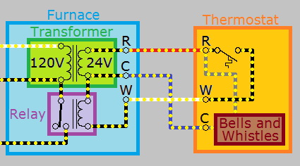

Property Construction House
1 Search request
- Search request for Block: XXXX, Lot: XX, “house and street addr , NY zip add”.
- Requesting Any and all open or closed permits, surveys, plans and violations regarding septic and well.
- Information regarding presence of an underground oil tank including permits, remediation reports, environmental reports.
2 Insurance
3 Construction
3.1 Foundation
- Brickblock walls or poured concrete foundation
- These are a level base to build off
- MudSill aka the Sill rests on top of the concrete foundation
- Mud Sill is made out of treated lumber so it doesnt rot from moisture
- Layed around the entire perimeter of foundation
- Tied to foundation with anchor bolts
3.2 Floor
- Joists are layed horizontally but turned on to their edge, and are the base structure of floors
- recent innovation uses I-joists (which sorta resembles steel I-beams)
- Beams are layed like joist but aligned orthogonally to Joists
- Joists sit ontop of Beams
- Made out of dimensional lumber or LVL (laminated veneer lumber)
- Columns or Posts
- Vertical structures that hold up Beams
- for a 2nd floor, typically put 2 “top plates” on top of posts, similar to mudsill on foundation.
- Subfloor - Subfloor sit ontop of Joists
- Sheets of plywood
- you put your fancy hardwood floors on top of the subfloor
- you put your Plate on top of your subfloor
3.3 Wall
- Separating Wall frame
- Studs - vertical wood for building fake wall, should not rely as support
- Studs sit on top of a stud layed horizontally flat called a Plate which sits on top of the subfloor
- Plate is layed flat like a mud sill
- 2x4 or 2x6 dimension
- spaced out 16’’ or 24’’
- sometimes fastened together as studpacks to help carry loads
- Studs sit on top of a stud layed horizontally flat called a Plate which sits on top of the subfloor
- Typically put 2 layed Plates on top of Studs
- Studs - vertical wood for building fake wall, should not rely as support
4 Electrical
- 120 V standard AC circuit, 2 phase meaning using a 4 wire line we can get 240 V
\[ \{1W,2W,...999W\} \in 120V \]
Just to emphasize voltage does not determine power or wattage.
From the distribution panel, each circuit breaker is in parallel with each other.
However the canonical textbook diagram of a parallel circuit doesnt work here, because it shows all parallel circuits sharing the same return path(the same neutral);
this is called “Mixing neutrals” Which is Not Allowed.
A better model for visualization is Multiple self-directed loops with
the 120V distribution panel power source in the center, and
each circuit with its circuit-breaker as a separate self-directed loop
4.1 Understanding appliances and Current
- Motto: Current is drawn, not supplied
- 3000W appliance will draw (3000W/120V) of current
- Appliance will typically have labels showing 5V, 25V, 120V, 240V for Voltage needed
- Appliances typically show Watts or VA(Volt-Amperes); VA = Watts for DC circuits
- DO NOT mistake VA for VAC, VAC is just Voltage + hinting it is a AC circuit
- Appliances with labels showing amps is SHORT-HAND for MAX-RATED amps it can take before burning out the internals.
Example:
You may see power-adapters show 25V 5.5A
The power-adapter converts 120V to 25V; it Does NOT convert the Amp to 5.5A.
5.5A is the MAX-RATED Amp the power-adapter can take before the high current burns out the internals.
4.1.1 Example Label of appliance
Typical label will choose one of each section below Voltage, Max-Amps, Power
- Voltage: 12 V, 12 VDC, 12 VAC
- Max-Amps: 5A
- Power: 20 W, 20 VA
Example: (12 VAC - 5A - 20VA) transformer secondary
4.2 Wires
\[R=\rho \frac{L}{A} \tag{R resistance of wire, L is Length, A is cross-section area}\]
- Bigger Cross-section of wire => Lower Resistance
- Also means more current
- Analogous to bigger cross-section of pipes => More water flow
- Also means more current
- Longer length of wire => Higher Resistance
Why do thin wires melt/catch on fire?
- Small cross-section wire => High Resistance wire
- Big load electrical appliance drawing High power => High current drawn
- High current flowing through thin wire causes it glow hot like a light-bulb filament(which also have high resistance)
Solution: Higher Gauge wires.
4.3 Overloaded socket
\[\frac{1}{R_{\text{total}}} = \frac{1}{R_1} + \frac{1}{R_2} + \frac{1}{R_3} + \ldots + \frac{1}{R_n}\]
- All appliances in a circuit are in parallel
- Plug in 2 appliances in a typical socket, they will be in parallel
- Plug in 4 appliances to two sockets and they will all be in parallel to the same circuit
It is mathematically proveable:
\[\forall k: R_{\text{total}} < R_k \tag{parallel circuits}\]
This means plugging more appliances to your electrical sockets LOWERS the overall load resistance of the circuit
- lower load resistance => higher current drawn
- too high current running though wires will make them glow hot like a lightbulb
- Circuit breaker will activate when you turn on a microwave, boiler, hair dryer,etc at the same time.
4.4 Old home
- Lightswitch - you may see one with no ground and only 2 wires. One is the line, the other is load.
- There is no neutral for this switch, so how does electricity return? Well obviously the neutral must be colocated with the load aka lights/lamps.
- To install a smart switch, you either pull a neutral and ground from the ceiling lights or from a nearby electrical socket.
- But DO NOT pull a neutral belonging to a different circuit breaker (termed “mixing neutrals”)
5 Water supply
- kirchoff law analog is continuity law \(Area_1 \times Velocity_1 = Area_2 \times Velocity_2\)
- Since pipes have same cross section area, whenever we have a junction, water flow will be halved in a 3-way pipe with 1 input, 2 output. (basically showering while using sink will decrease flow of water by half)
6 Plumbing air vent pipe
- Analogous to how circuits use ground as a reference point, drains need a route to air’s atmospheric pressure as a reference point.
- eg. try drinking through a straw poked through a coconut with no air gaps. 0 pressure differential means you cant drink.
7 HVAC

- C is the Commons aka return path for Smart functionalities, (informally may be considered neutral)
- Measuring C wire against ground will give you 0V
- You must measure the C wire against R to get 25V to see if it is working properly
- Notice: Look at the R wire INSIDE the thermostat, IT SPLITS THE WIRE to an “ALWAYS ON Smart_Bells_and_Whistles” and the switch ON_OFF heater.
- Understandably much confusion: R paired with neutral W as the heater circuit, then what paired with the neutral C wire? Apparently, it was also the R but you just couldnt see it since it was in the thermostat.
- Initially 120V powers the thermostat ONLY and the Smart_Bells_and_Whistles, not the heater
- “R-C wires” powers your fancy smart functionalities
- Person switches thermostat to ON
- “R-W wires” powers your actual heater circuit when switch is ON
- The thermostat circuit closes the heater relay and supplies the 120V to the actual heater
- The Default-open-relay is a logical “AND” that couples the “R-W circuit” with the “Actual_Heater”
- Red - R - 24VAC
- Red - Rh - 24VAC (dedicated to heat call)
- Red - Rc - 24VAC (dedicated to cooling call)
- Green - G - Fan on
- White - W - Heat call
- Yellow - Y - Cool call
- Blue or Black - C - Common
If we included a Y-wire in the above diagram, we would draw the Y like the W but direct it to a new relay resulting in a diagram showing 2 relays with W-wire controlling the heater relay and Y-wire controlling the cooler relay.